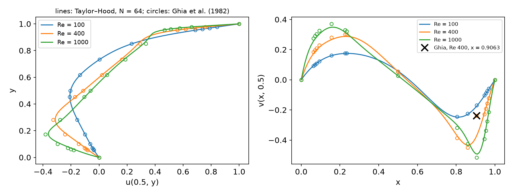
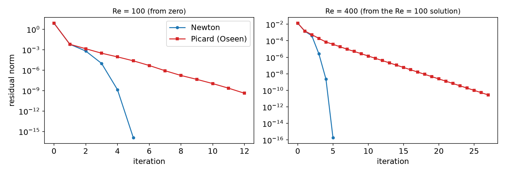

AI-based Materials and Process Simulation I
Week 15 — Steady Navier–Stokes: Newton’s Method · Reynolds-Number Continuation · Lid-Driven Cavity · PCD · H(div)-Conforming DG
Process Systems Laboratory
Department of Chemical and Biomolecular Engineering, SeoulTech
Today
| Part | Topic | Time |
|---|---|---|
| Quiz | Week 14 (Chorin, IPCS, CFL, the convection term) | 10 min |
| A | Theory — steady NS, Newton vs Picard, continuation, PCD, H(div)-conforming DG | 50 min |
| B | DOLFINx 0.11 — residual and Newton, continuation, PCD with fenicsx-pctools, the H(div) forms |
35 min |
| C | Measurements — the cavity vs Ghia et al., Newton vs Picard, GMRES iterations, \nabla\cdot\mathbf u_h | 40 min |
| D | LLM pitfalls with steady flow solvers · HW14 | 15 min |
Lab notebook: W15_lab.ipynb · Homework: W15_HW14.ipynb (due before the Week 16 session)
Where we are
| Week | Ingredient | Used today |
|---|---|---|
| 9 | Newton’s method, NonlinearProblem, SNES |
the outer iteration |
| 11 | Taylor–Hood P2/P1, inf-sup, the pressure constant | the spatial pair |
| 12 | block preconditioners, Schur complement, M_p | the inner (linear) solver — now with convection |
| 13 | convection, Péclet number | \mathrm{Re} plays the role of the Péclet number |
| 14 | unsteady NS, projection methods | the other route to a steady state (time stepping) |
| 15 | steady NS | Newton, continuation, cavity, PCD, H(div) |
Week 14 reached steady states by marching in time — hundreds of linear solves. A steady solution is a root of \mathbf F(\mathbf u,p)=0: Newton gets there in five or six — if it starts close enough.
Part A — Theory
§A1 Steady Navier–Stokes and the lid-driven cavity
-\nu\Delta\mathbf u+(\mathbf u\cdot\nabla)\mathbf u+\nabla p=\mathbf f,\qquad\nabla\cdot\mathbf u=0\quad\text{in }\Omega,\qquad\nu=\frac1{\mathrm{Re}}.
Find (\mathbf u,p)\in V\times Q with \ F\big((\mathbf u,p);(\mathbf v,q)\big)=\nu(\nabla\mathbf u,\nabla\mathbf v)+c(\mathbf u;\mathbf u,\mathbf v)-(p,\nabla\cdot\mathbf v)-(q,\nabla\cdot\mathbf u)-(\mathbf f,\mathbf v)=0, \ c(\mathbf w;\mathbf u,\mathbf v)=((\mathbf w\cdot\nabla)\mathbf u,\mathbf v).
The lid-driven cavity: unit square, \mathbf u=(1,0) on the lid y=1, \mathbf u=0 on the other walls, \mathbf f=0.
- Enclosed flow: p only up to a constant (Week 11) — pin one value, or a null space.
- The corners (0,1), (1,1): discontinuous velocity — p\notin H^1, the solution is singular there.
- Benchmark: Ghia, Ghia & Shin (1982), u(0.5,y) and v(x,0.5) at 17 points each, Re = 100 … 10 000 (multigrid, 129 × 129 finite differences).
Existence for every Re (Leray–Schauder). Uniqueness only for small data: \nu^2>\mathscr N\|\mathbf f\|_{-1} (\mathscr N: the continuity constant of c). For the cavity the data is the lid: uniqueness and the convergence of Picard are guaranteed only at low Re.
§A2 Newton vs Picard
Directional derivative of F at (\mathbf u^k,p^k) in the direction (\delta\mathbf u,\delta p):
J_k\big((\delta\mathbf u,\delta p);(\mathbf v,q)\big)=\nu(\nabla\delta\mathbf u,\nabla\mathbf v)+\underbrace{c(\mathbf u^k;\delta\mathbf u,\mathbf v)}_{\text{Oseen}}+\underbrace{c(\delta\mathbf u;\mathbf u^k,\mathbf v)}_{\text{Newton only}}-(\delta p,\nabla\cdot\mathbf v)-(q,\nabla\cdot\delta\mathbf u).
Newton: J_k\,\delta=-F_k, \ \mathbf u^{k+1}=\mathbf u^k+\delta\mathbf u.
- quadratic convergence near the solution
- the basin of attraction shrinks as Re grows (roughly \sim\nu)
- J_k: non-symmetric, every iteration
Picard (Oseen): drop c(\delta\mathbf u;\mathbf u^k,\mathbf v) — the convecting velocity is frozen.
- a linear Oseen problem each step; linear convergence, factor \approx\mathscr N\|\mathbf f\|/\nu^2
- global convergence for small data
- same size and sparsity as Newton — with a direct solver about the same cost per iteration
Practical recipe: a few Picard steps to get close, then Newton (§C2) — or continuation (§A3).
§A3 Reynolds-number continuation
The solution depends smoothly on Re (away from bifurcations): \mathbf u(\mathrm{Re}+\Delta\mathrm{Re})=\mathbf u(\mathrm{Re})+O(\Delta\mathrm{Re}).
- Solve at a low Re from zero (Stokes-like: Newton converges).
- Raise Re by a step; start Newton from the previous solution.
- If Newton fails: halve the step and retry from the last converged solution.
- Natural-parameter continuation: the simplest predictor (the previous solution). Better: a tangent predictor \mathbf u+\Delta\mathrm{Re}\,\partial_{\mathrm{Re}}\mathbf u (one extra solve with J), or pseudo-arclength continuation, which follows the branch around turning points (Keller 1977).
- Cost: each step needs a few Newton iterations, not a long transient — and every intermediate solution is itself a result.
- The same idea for any hard nonlinear problem: load stepping in elasticity, continuation in an activation energy, in a power-law index.
§A4 The linear solver: from M_p to PCD
Newton/Oseen matrix and its block factorisation (Week 12): \begin{pmatrix}F&B^\top\\B&0\end{pmatrix}, \ F=\nu A+N(\mathbf w) (+ the Newton term), \ S=-BF^{-1}B^\top.
Stokes (N=0): S\approx-M_p/\nu — spectrally equivalent, iterations independent of h (Week 12).
With convection this approximation ignores N: iterations grow with Re (§C3).
Pressure convection–diffusion (PCD) (Kay, Loghin & Wathen 2002; Elman, Silvester & Wathen): assume the commutator is small, FM_u^{-1}B^\top\approx B^\top M_p^{-1}F_p with F_p=\nu A_p+N_p(\mathbf w) the same operator on the pressure space. Then S\approx -A_pF_p^{-1}M_p,\qquad S^{-1}\approx -M_p^{-1}F_pA_p^{-1}.
- One application: a pressure Laplace solve (A_p, AMG), a multiplication by F_p, a mass-matrix solve — all on the pressure space.
- Boundary conditions for A_p, F_p are the delicate part (inflow, outflow, Robin terms; Blechta 2019). For the enclosed cavity: none — A_p has the constant null space.
§A5 H(div)-conforming discontinuous Galerkin
Taylor–Hood satisfies (\nabla\cdot\mathbf u_h,q_h)=0 for all q_h\in Q_h — but \nabla\cdot\mathbf u_h\in discontinuous P1 \not\subset Q_h: mass is conserved only weakly.
If \nabla\cdot V_h\subseteq Q_h, take q_h=\nabla\cdot\mathbf u_h: \|\nabla\cdot\mathbf u_h\|^2=0 — pointwise divergence-free.
- V_h=\mathrm{RT}_{k+1} (normal component continuous: H(\mathrm{div})-conforming), Q_h=\mathrm{DG}_k
- tangential continuity is lost ⇒ the viscous term needs DG: symmetric interior penalty (Week 13’s jumps and averages, \alpha=6k^2)
- convection: upwind fluxes on facets
Pressure robustness: with \nabla\cdot\mathbf u_h=0 exactly, the velocity error does not depend on the pressure (\nu^{-1}\inf\|p-q_h\| disappears from the estimate). Matters for small \nu and large irrotational forces (buoyancy, Coriolis) — and for coupled transport: a species advected by \mathbf u_h sees no artificial sources.
Cockburn, Kanschat & Schötzau (2007); Schroeder & Lube (2018). DOLFINx 0.11 demo: demo_navier-stokes.py (Kovasznay flow).
Part B — Steady Navier–Stokes in DOLFINx 0.11
§B1 The residual, Newton and Picard
W = fem.functionspace(msh, basix.ufl.mixed_element([P2_vec, P1]))
w = fem.Function(W); u, p = ufl.split(w); v, q = ufl.TestFunctions(W)
Re = fem.Constant(msh, 100.0) # changed later without recompiling
F = (1 / Re * inner(grad(u), grad(v)) + inner(dot(grad(u), u), v)
- p * div(v) - q * div(u)) * dx
problem = NonlinearProblem(F, w, bcs=bcs, petsc_options_prefix="cav_",
petsc_options={"snes_type": "newtonls", "snes_linesearch_type": "none", "snes_rtol": 1e-10,
"ksp_type": "preonly", "pc_type": "lu", "pc_factor_mat_solver_type": "mumps"})J=None:NonlinearProblemdifferentiatesFwithufl.derivative— the full Newton Jacobian, no hand derivation.- Picard: pass your own
Jwith the convecting velocity frozen:inner(dot(grad(du), u), v)(dutrial,uthe current iterate). - BCs: the lid by interpolating
isclose(x[1], 1)on all boundary DOFs (the corners get 0 or 1 — a discretisation choice); the pressure pinned at (0,0).
§B2 Continuation and point values
Point values in parallel — the rank that owns the cell evaluates, the others contribute -\infty:
tree = geometry.bb_tree(msh, 2)
cells = geometry.compute_colliding_cells(msh, geometry.compute_collisions_points(tree, P), P)
out = np.full(len(P), -np.inf)
for i in range(len(P)):
if len(c := cells.links(i)): out[i] = uh.eval(P[i], c[:1])[comp]
res = np.empty_like(out); comm.Allreduce(out, res, op=MPI.MAX) # buffers: Allreduce, not allreduce§B3 PCD with fenicsx-pctools
Install (Colab, into the %%fenicsx environment): pip install --no-deps git+https://gitlab.com/rafinex-external-rifle/fenicsx-pctools.git (lab §3 has the cell).
V, Q = fem.functionspace(msh, ("Lagrange", 2, (2,))), fem.functionspace(msh, ("Lagrange", 1))
F = (inner(dot(grad(u), u), v) + nu * inner(grad(u), grad(v)) - p * div(v) - q * div(u)) * dx # u, p: separate Functions
J = ufl.derivative(F, (u, p), ufl.TrialFunctions(ufl.MixedFunctionSpace(V, Q)))
Js = create_splittable_matrix_block(J_mat, ufl.extract_blocks(J), nu=nu, v=u) # PCD needs nu and the convecting velocityoption (prefix wrapped_) |
value |
|---|---|
pc_type, pc_fieldsplit_type, …schur_fact_type |
fieldsplit, schur, upper |
fieldsplit_0_pc_type |
lu (velocity block; AMG for large problems) |
fieldsplit_1_pc_python_type |
fenicsx_pctools.pc.PCDPC_vX |
fieldsplit_1_pcd_Ap_pc_type, …_pcd_Mp_pc_type |
hypre, lu |
Enclosed flow: no bcs_pcd (then A_p carries the constant null space) and a pressure null space on the Jacobian.
§B4 The H(div)-DG forms (from demo_navier-stokes.py)
V = fem.functionspace(msh, ("Raviart-Thomas", k + 1)); Q = fem.functionspace(msh, ("Discontinuous Lagrange", k))
jump = lambda phi: outer(phi("+"), n("+")) + outer(phi("-"), n("-"))
a = (1 / Re) * (inner(grad(u), grad(v)) * dx - inner(avg(grad(u)), jump(v)) * dS
- inner(jump(u), avg(grad(v))) * dS + alpha / avg(h) * inner(jump(u), jump(v)) * dS
+ Nitsche terms on ds) - p * div(v) * dx - div(u) * q * dx
lmbda = conditional(gt(dot(u_n, n), 0), 1, 0); u_uw = lmbda("+") * u("+") + lmbda("-") * u("-")
a += (inner(u / dt, v) * dx - inner(u, div(outer(v, u_n))) * dx
+ inner(dot(u_n, n)("+") * u_uw, v("+")) * dS + inner(dot(u_n, n)("-") * u_uw, v("-")) * dS + …)- Velocity BC: the RT DOFs are normal fluxes —
dirichletbcsets \mathbf u\cdot\mathbf n; the tangential part enters weakly (Nitsche). - The demo reaches the steady Kovasznay flow by implicit time steps with a lagged convecting velocity \mathbf u^n (Picard in pseudo-time); blocked
LinearProblem(…, kind="mpi").
Part C — Measurements
§C1 The cavity vs Ghia et al.

Taylor–Hood, crossed mesh, N=64, continuation 100 → 400 → 1000. The × marks Ghia’s v(0.9063,0.5) at Re = 400 (see the next two slides).
§C1 (cont.) Iterations and deviations
crossed mesh, Taylor–Hood |
Re = 100 | Re = 400 | Re = 1000 |
|---|---|---|---|
| Newton its, continuation (N=32/64/128) | 5 / 4 / 4 | 5 / 5 / 5 | 6 / 6 / 7 |
| Newton from zero (N=32/64/128) | 5 / 4 / 4 | 7 / 7 / 7 | diverged (reason −9; after 12–19 its, the count varies between runs) |
| \max\lvert u-u_{\text{Ghia}}\rvert, N=32/64/128 | 0.0089 / 0.0050 / 0.0050 | 0.031 / 0.015 / 0.0068 | 0.048 / 0.023 / 0.010 |
| \max\lvert v-v_{\text{Ghia}}\rvert, N=32/64/128 | 0.0051 / 0.0050 / 0.0069 | 0.114 / 0.132 / 0.142 | 0.053 / 0.023 / 0.011 |
Run time (-np 2, MUMPS, continuation): N=32 under 0.5 s per Re; N=128 (≈ 296 000 DOFs) 6–9 s.
§C1 (cont.) Reading the comparison
- Re = 400, 1000: the deviation halves with every refinement — our discretisation error dominates.
- Re = 100: it stops at 0.005 — now Ghia’s error dominates (a 129 × 129 grid, second order, 5 digits). A benchmark is a measurement too.
- Re = 400, v: one point gets worse with refinement — v(0.9063,0.5): ours -0.352, -0.370, -0.380; Ghia -0.23827. Without it the deviation is 0.036 / 0.016 / 0.0076. Ghia’s value does not fit its neighbours (the × in the figure): a probable misprint in the table, noted in several transcriptions.
Before blaming your code for a disagreement with a published table: refine — does the gap shrink? Is it one point or all? Do several independent sources agree with you?
§C2 Newton vs Picard

N=32. Re = 100 from zero: Newton 5 iterations, Picard 12. Re = 400 from the Re = 100 solution: Newton 5, Picard 27 (the residual shrinks by a factor ≈ 0.5 per step). Re = 1000 from zero: Newton diverges, but 3 Picard steps (residual 1.1\times10^{-3}) then Newton: 4 iterations, quadratic.
§C3 GMRES inside Newton: M_p/\nu vs PCD
GMRES (right preconditioned, \text{rtol}=10^{-6}), block upper-triangular Schur preconditioner, velocity block by LU; continuation Re = 100 → 400 → 1000, crossed mesh.
| Schur approximation | N | Re = 100 | Re = 400 | Re = 1000 |
|---|---|---|---|---|
| M_p/\nu (Week 12) | 32 | 39.5 | 215 | GMRES fails (1000 its) |
| 64 | 40.2 | 227 | GMRES fails | |
PCD (PCDPC_vX) |
32 | 27.5 | 70.2 | 176 (Colab: 135) |
| 64 | 28.2 | 73.0 | 176 |
GMRES iterations per Newton step; Newton: 4, 5, 6 iterations in every converged case. At Re = 1000 the PCD count changed between machines (176 in three local runs, 135 on Colab) — near its limit GMRES is sensitive to round-off; read it as “130–180”.
- Both are mesh-independent (32 → 64: same counts) — the Week 12 property survives.
- M_p/\nu degrades fast with Re; PCD degrades too, but slowly — and converges at Re = 1000.
- PCD is not Re-independent here: the enclosed-flow boundary conditions on A_p, F_p are the simplest possible; Blechta’s variants and the outflow Robin term are the subject of current work.
§C4 Kovasznay flow: H(div)-DG vs Taylor–Hood
Exact steady NS solution, Re = 25, unit square, \mathbf u prescribed on \partial\Omega.
| n | H(div)-DG \lVert\mathbf u-\mathbf u_h\rVert | H(div)-DG \lVert\nabla\cdot\mathbf u_h\rVert | Taylor–Hood \lVert\mathbf u-\mathbf u_h\rVert | Taylor–Hood \lVert\nabla\cdot\mathbf u_h\rVert |
|---|---|---|---|---|
| 8 | 1.60\times10^{-2} | 3\times10^{-14} | 1.21\times10^{-3} | 2.4\times10^{-2} |
| 16 | 3.74\times10^{-3} | 2\times10^{-13} | 1.51\times10^{-4} | 5.8\times10^{-3} |
| 32 | 8.40\times10^{-4} | 3\times10^{-13} | 1.89\times10^{-5} | 1.4\times10^{-3} |
H(div)-DG: RT2 × DG1 (16 512 DOFs at n=32), 25 implicit steps to t=10. Taylor–Hood: P2 × P1, Newton (4 iterations).
- Velocity error rates: H(div)-DG ≈ 2.1 (RT2 contains full P1), Taylor–Hood ≈ 3 (P2) — Taylor–Hood is more accurate per mesh here.
- \nabla\cdot\mathbf u_h: round-off for H(div)-DG (10^{-13}–10^{-12}; the digits differ between machines), O(h^2) for Taylor–Hood. Choose by what matters downstream: transport by \mathbf u_h, pressure robustness — or the velocity error.
Part D — LLMs and Steady Flow Solvers · HW14
§D1 Where LLM-generated steady NS code goes wrong
| Kind | What it looks like | Symptom (measured) |
|---|---|---|
| A Picard Jacobian sold as Newton | a hand-written J with the convecting velocity frozen, labelled “Newton” |
linear convergence: 12 / 27 instead of 5 / 5 iterations (§C2) |
| The Stokes preconditioner at high Re | fieldsplit with M_p/\nu for the Schur complement |
215 GMRES per Newton step at Re = 400, failure at Re = 1000 (§C3) |
| “Taylor–Hood is divergence-free” | \nabla\cdot\mathbf u_h=0 assumed for transport or post-processing | \lVert\nabla\cdot\mathbf u_h\rVert=1.4\times10^{-3} at n=32 (§C4) |
| Agreement with a table taken on trust | one bad benchmark point “explained” by mesh or method | Ghia Re = 400, x=0.9063: the gap grows under refinement (§C1) |
Verification habit: an exact solution first (Kovasznay), then the benchmark on three meshes; read the SNES residuals (quadratic or linear?) and the converged reason of every solve.
HW14 — the cavity at Re = 100, 400, 1000, due before Week 16
W15_HW14.ipynb (100 pts)
- Q1 (20) Theory: the Newton derivative, uniqueness and continuation, PCD, H(div)
- Q2 (40) The cavity vs Ghia on three meshes (
rightdiagonal) - Q3 (20) GMRES iterations: M_p/\nu vs PCD along a continuation path
- Q4 (20) LLM debugging: a cavity script with four bugs
Rules as always: Restart session and run all, -np 2, the AI-usage log, numbers only from your own cells.
Q3 needs fenicsx-pctools — the install cell is in the notebook.
Summary
| Concept | Key idea | DOLFINx 0.11 |
|---|---|---|
| Newton | full Jacobian, quadratic near the root, small basin at high Re | NonlinearProblem(F, w, …), J=None |
| Picard (Oseen) | convecting velocity frozen, linear, robust start | your own J |
| Continuation | previous Re’s solution as the initial guess | Re = fem.Constant, Re.value = … |
| Cavity | Ghia et al.: refine, and question the table too | bb_tree, Allreduce(MAX) |
| PCD | S^{-1}\approx-M_p^{-1}F_pA_p^{-1}: convection on the pressure space | fenicsx-pctools, PCDPC_vX |
| H(div)-DG | \nabla\cdot V_h\subseteq Q_h ⇒ exactly divergence-free | RT_{k+1} × DG_k, SIP, upwinding |
Next week — final project presentations (Course I); the report is due the same day.